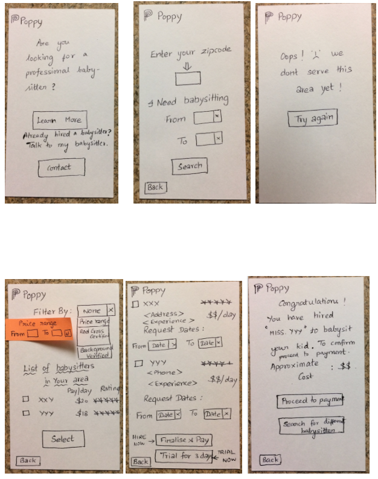

Poppy App Redesign
Our final live interactive prototype is HERE.
MeetPoppy is a online platform to search for a childcare provider in Madison, WI. At present the team has just a website, but no app. In CS 1300 -User Interface Design and Analysis , we worked as a team of four(Aarthi Anbalagan, Jason Nadboy, Danielle Peterson, Vachan Shetty), to come up with a app prototype.
The problem, which we tried to solve, was to automate many things while searching for childcare, which are right now, done with human assistance. Also, we tried a new mechanism wherein a parent can actually get to know more about the childcare provider, before actually hiring. Because, we know that our kids are precious, and their safety is of utmost concern.
Our interface seeks to fulfill this aim by providing an intuitive and efficient way for people to search for babysitters in their area, learn more about the babysitters, and then book them either immediately or in the future.
Initially each of us created a paper prototype. For now, I will only consider my paper prototype.

 After prototyping, each of us merged our ideas, to come up with a super intuitive final paper prototype. For this, we used "Wizard of Oz" technique, with a few of our fellow students and other users to come up with most easily usable prototype.
During the study, users were required to enter the date twice in the search form, and they found this tedious and unnecessary if they only wanted a babysitter for one day. So, in our final paper prototype, we decided to make an option to let the users choose if they needed a sitter for one or multiple days. For the one day option, they did not have to enter a second date. Users did not like that so much information was being thrown at them in the search results page, so decided in our final paper prototype to have the search results only include pictures and names. Users like the filter option on the search results page, as well as the sitter video introductions, so we included both these in the final paper prototype. Lastly, the final paper prototype allows users to hire directly from the chat page, as per the request of users in the study.
After prototyping, each of us merged our ideas, to come up with a super intuitive final paper prototype. For this, we used "Wizard of Oz" technique, with a few of our fellow students and other users to come up with most easily usable prototype.
During the study, users were required to enter the date twice in the search form, and they found this tedious and unnecessary if they only wanted a babysitter for one day. So, in our final paper prototype, we decided to make an option to let the users choose if they needed a sitter for one or multiple days. For the one day option, they did not have to enter a second date. Users did not like that so much information was being thrown at them in the search results page, so decided in our final paper prototype to have the search results only include pictures and names. Users like the filter option on the search results page, as well as the sitter video introductions, so we included both these in the final paper prototype. Lastly, the final paper prototype allows users to hire directly from the chat page, as per the request of users in the study.
We standardized font choices across the entire app.
Almost all our buttons have black text on a white background for standardization and appearance purposes. The exceptions included the “Hire” button, which we made have a brown background in order to distinguish it from the Contact” button, as well as the “send” button in the chat, which is more familiar on the iPhone.
Finally, to get best feedback, we mailed this to actual poppy team. And here is the feedback, which we received.
Testimonials